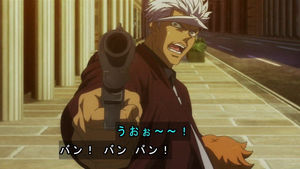
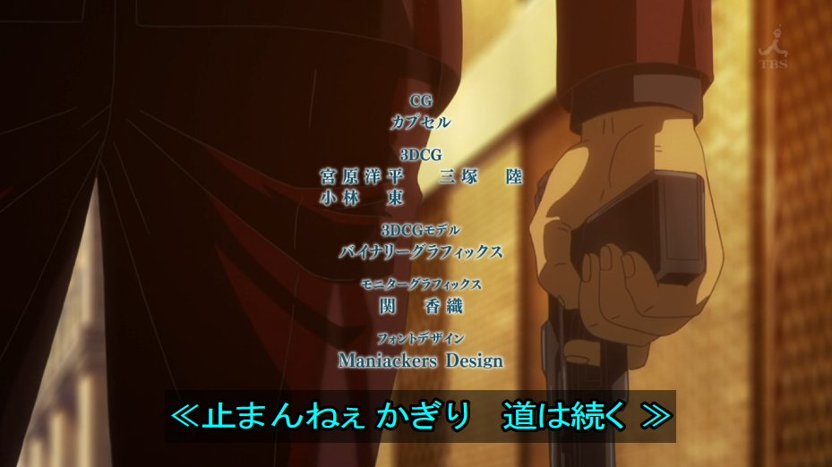
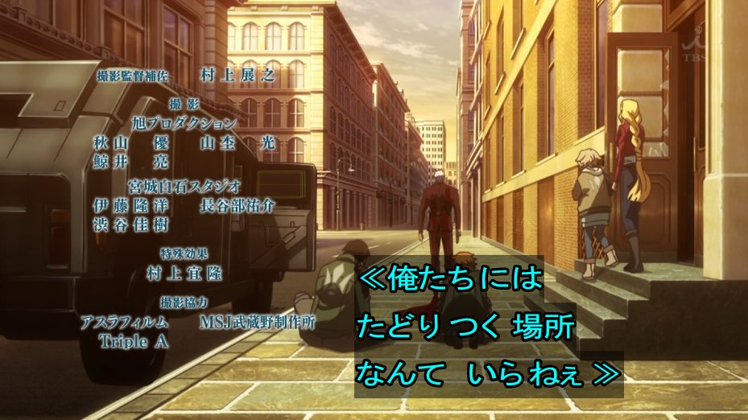
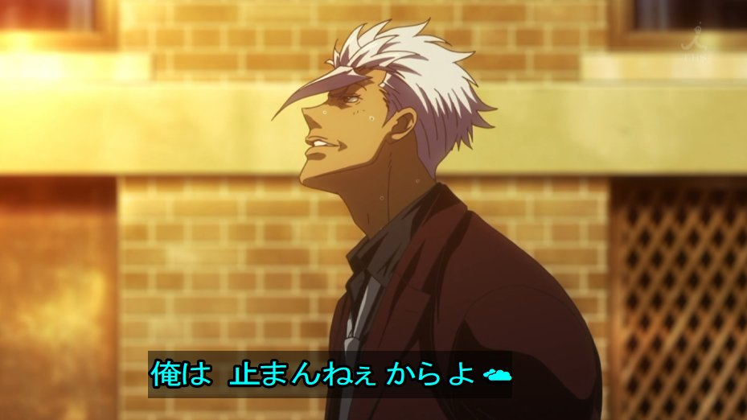
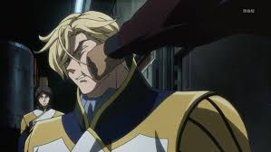
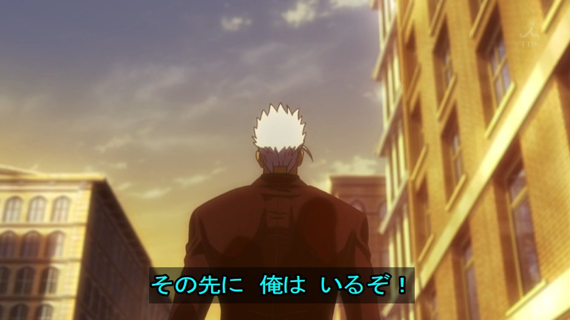
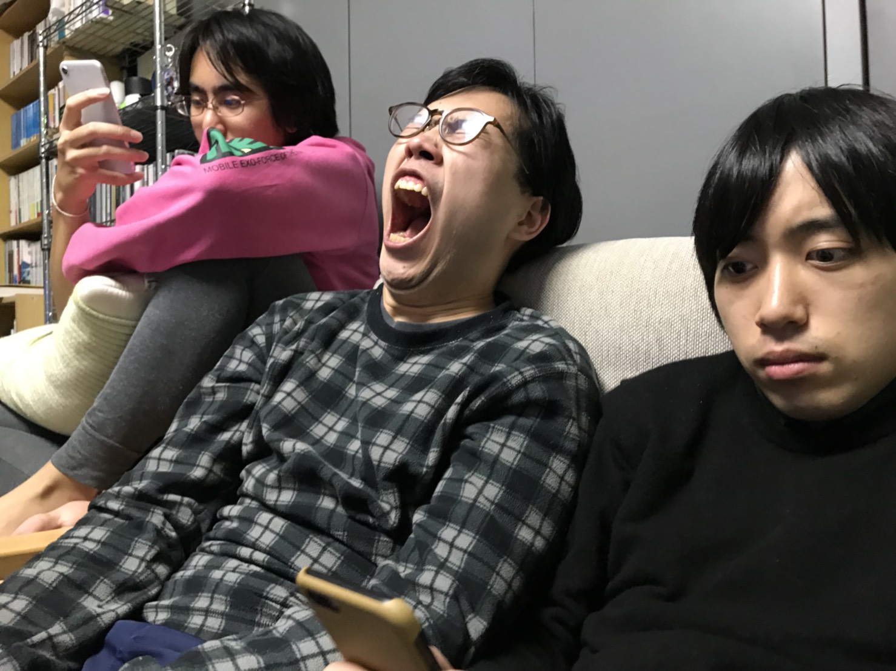

<!DOCTYPE html>
<html lang="ja"> 
    <head>
        <meta charset="utf-8">
         <title>.cafe</title>
         <meta name="description" content="SPACE FAX FANTASY">
         <link rel="stylesheet" href="css/style.css">
    </head>
    <body>
        <header>
            <h1>.cafe</h1>
        </header>

        <main>
            <article>
                <h2>.cafeへようこそ。</h2>
                <p>「.」(ドット)は最小でありながら全体と融け合い、より深い階層へと潜水を続けます。</p>
                <nav>
                        <ul>
                            <li><a href="#explain">What's ".cafe"？</a></li>
                            <li><a href="#voice">master's voice</a></li>
                            <li><a href="#profile">member's profile</a></li>
                            <li><a href="#session">セッション</a></li>
                            <li><a href="#fucks">世界のファックス</a></li>
                        </ul>
                    </nav>
            </article>

            <article id="explain">
                <h2>What's ".cafe"？</h2>
                <p>.cafeは、現象そのものである技術を目指して、文理を問わずあらゆる視点をもったメンバーが集うラボラトリーです。</p>
            </article>

            <article id="voice">
                <h2>master's voice</h2>

                <p>ファックス、サクセス、ファクセクス。<br>
                ファックスを先鋭化するサイエンスファックス。<br>
                スウェーデンを新しくするデザインファックス。</p>
            </article>

            <article id="profile">
                <h2>member's profile</h2>

                <ul>
                    <li>アイバーモスキート</li>
                    <li>ドット</li>
                    <li>-KIOKA-</li>
                    <li>NaRuGaにゃん</li>
                    <li>うさぎ専務</li>
                    <li>スズキ</li>
                </ul>

                <section class="performer">
                    <h4>アイバーモスキート</h4>
                    <p>.cafeのオーナー、家主。<br>
                    音楽、イラストレーション、アニメーションと、その活動範囲は限界を知らない。<br>
                    ファックスとシナジーを追求し、スウェーデンの研究に骨身を砕く。</p>
                    
                </section>
                <section class="performer">
                    <h4>ドット</h4>
                    <p>.cafeのマスター。.cafeを司る神であり、地球防衛軍の一員。<br>
                    「 .」は、ユダヤ神秘思想における世界の起源であり、莫大なエネルギーの集約を表す。<br>
                    HDD内に大量の機密資料を隠し持っている。</p>
                    
                </section>
                <section class="performer">
                    <h4>-KIOKA-</h4>
                    <p>民間の研究機関に所属するプログラマー。<br>
                    旧弊な世界に中指を立て、VRテクノロジーとスウェーデンの理想的一体化に驀進している。<br>
                    ハワイで培ったワールドワイドなファックスを展開する。</p>
                    
                </section>
                <section class="performer">
                    <h4>NaRuGaにゃん</h4>
                    <p>関西在住のナチュラルボーンプログラマー。<br>
                    大学機能の脆弱性をいち早く見抜いて脱出し、現在はプログラミングの技術開発に集中している。<br>
                    「止」の境地からはどんな世界が見えるのだろうか？</p>
                    
                </section>
                <section class="performer">
                    <h4>うさぎ専務</h4>
                    <p>都内のCG会社に所属するCGデザイナー。<br>
                    論理空軍を自称し、9歳から14歳までの少女を得意とする。</p>
                    <p><a href="https://www.amazon.co.jp/gp/product/4041064716/ref=s9u_simh_gw_i1?ie=UTF8&pd_rd_i=4041064716&pd_rd_r=cc9b1755-c859-11e7-a6b2-2978f9713900&pd_rd_w=h5bNw&pd_rd_wg=vKF7S&pf_rd_m=AN1VRQENFRJN5&pf_rd_s=&pf_rd_r=ZCSW47ZACXR2WMSQ2KTA&pf_rd_t=36701&pf_rd_p=bbd61da0-6bb0-4bac-b043-de505f7dbdfd&pf_rd_i=desktop" target="_blank">参考書籍</a></p>
                    
                </section>
                <section class="performer">
                    <h4>鈴木はたはた</h4>
                    <p>.cafeに住み着く寄生虫であり睡眠厨。<br>
                    What's going on?</p>
                    
                </section>
            </article>

            <article id="session">
                    <h2>セッション</h2>
                <section>
                    <p>.cafeでは、毎週日曜の午前から研究報告会を行なっています。<br>
                    この研究会はセッションと呼ばれ、論理思考を超えた直感までをも援用します。</p>
                    
                </section>

                <section>
                    <h3>session.no.1.</h3>

                    <table>
                        <tr>
                            <th>日付</th>
                            <td>2018/1/13 (sat)</td>
                        </tr>
                        <tr>
                            <th>時間</th>
                            <td>17:00 ~ 20:00</td>
                        </tr>
                        <tr>
                            <th>会場</th>
                            <td>mosquit's house  王子in神の谷</td>
                        </tr>
                        <tr>
                            <th>最寄り駅</th>
                            <td>
                                東京メトロ南北線　王子神谷駅<br>
                                <a href="https://goo.gl/maps/KRS2v5beEBT2" target="_blank">Googleマップで見る</a>
                            </td>
                        </tr>
                        <tr>
                            <th>会費</th>  
                            <td>crazy heart</td>
                        </tr>

                    </table>
                </section>

                <section>    
                    <h3>session.no.2.</h3>

                    <table>
                        <tr>
                            <th>日付</th>
                            <td>2018/1/20 (sat)</td>
                        </tr>
                        <tr>
                            <th>時間</th>
                            <td>17:00 ~ 20:00</td>
                        </tr>
                        <tr>
                            <th>会場</th>
                            <td>mosquit's house  王子in神の谷</td>
                        </tr>
                        <tr>
                            <th>会費</th>  
                            <td>crazy heart</td>
                        </tr>
                    </table>
                </section>
            </article>

            <article id="fucks">
                <h2>世界のファックス</h2>
                
                <ol>
                   <li>ファクシミリ</li>
                   <li>ファクソフォン</li>
                   <li>ファクソシスト</li>
                </ol>
            </article>
        </main>

        <footer>
            <p class="pagetop"><a href="#top">ページの先頭へ</a></p>
            <p class="copyright"><small>&copy;.cafeの人々</small></p>
        </footer>
    </body>
</html>